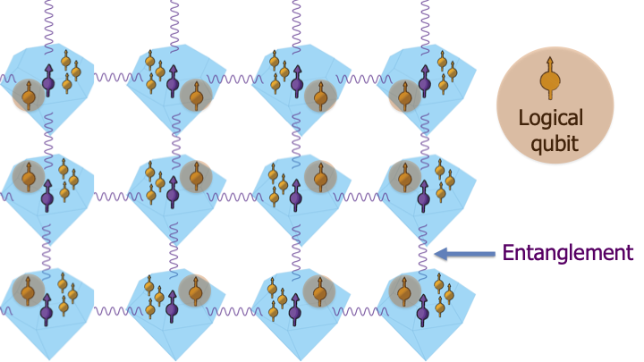
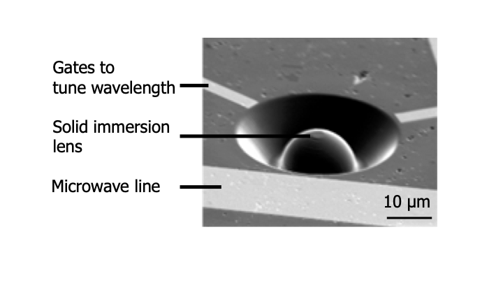
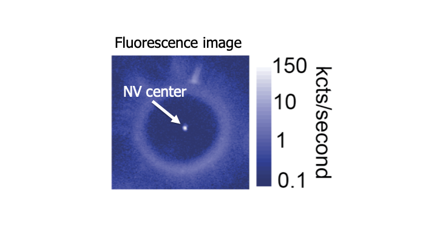
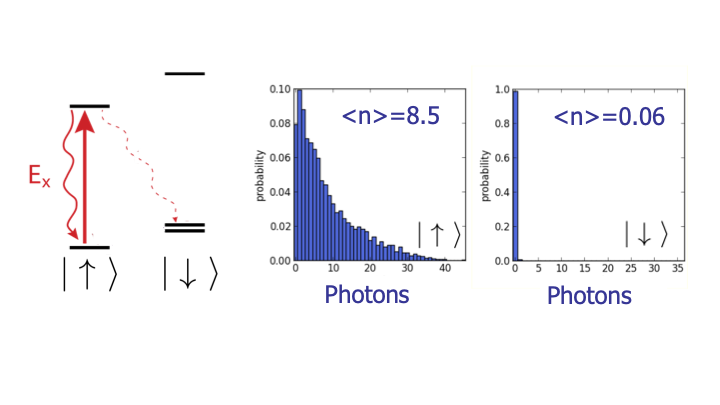
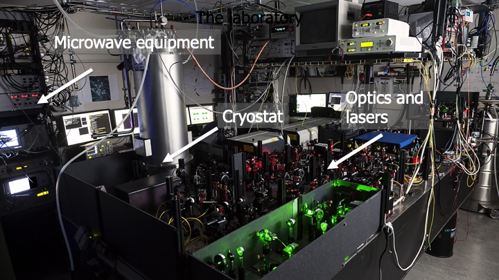

16. NV Center Qubits
In the following we are going to learn about a very promising type of quantum bit, spins associated to the nitrogen vacancy or NV center in diamond.
This NV center consists of a substitutional nitrogen atom in the diamond lattice, next to a missing carbon atom, a vacancy. At this vacancy, some electrons are trapped, that form an electron spin that we can use as a quantum bit.

These NV centers have several unique features that make them promising for quantum information systems. First, the electron spin has a very long coherence time, even up to seconds; which means that we can control it as a good qubit. Quite remarkably, this qubit can even work in a large range of temperatures, all the way up to room temperature. Second, this electron spin is not the only qubit we have in the system. It couples to nuclear spins in the environment, which gives us extra qubits to store and process quantum information. Additionally, the electron spin also interacts with photons, elementary particles of light. This makes it possible to send quantum states far away and to connect and entangle NV centers over a distance. With such a hybrid system of photons and spins we can create quantum networks. In a quantum network we have nodes consisting of multiple spins or qubits that can store and process quantum states and we can then link these together using optics into a network.

This is a very exciting approach. In this way we can make a large quantum computer by just connecting many copies of small and simple quantum processors together. This avoids the challenges of making a single chip of ever-increasing complexity. Because these optical connections can also go over long distances, we can use these networks for quantum cryptography as well which will enable fundamentally secure communication. Finally, one can even combine these two ideas and use the network to access a quantum computer remotely. In that way, even the party that hosts the quantum computer cannot know what computation you are performing or what the outcome is. How does such a computation work in a network? The logical qubits, which actually hold the information of the computation, are spread out over the entire network.

We use optical links to distribute quantum entanglement and we store and process that entanglement in the rest of the qubits. These entangled states are then used as a resource to perform error correction and the quantum computation, and these are also spread out over the entire network. What kind of samples do we use for this? Here you see an image of a little diamond wired up in a chip in a cryostat, which we bring to 4 Kelvin.

This is quite a bit a higher temperature than you will typically see for other qubits. If we zoom in, you see here a diamond which is just a few mm big.

And if we zoom in even further with an electron microscope, we can see these structures. The grey background here is the surface of the diamond.

The electrodes are used to apply electric fields to control the emission wavelength of the NV center, the colour it emits. And the microwave line is used to apply microwave fields that control the spin state. The half sphere is a lens that has been sculptured out of the diamond; we do this to get the photons effectively out of the diamond. Diamond has a very high refractive index. That is one of the reasons they are so shiny! But it also means that if we have flat surface we get a lot of total internal reflection. By curving the surface we can get about 10 to 20 times more light out. In this fluorescence image you can see that we indeed have exactly one single NV center at the middle of the lens.

The electronic spin of the NV is actually a spin 1.

To use it as a qubit we just select two levels. We can control this spin by applying microwave pulses. If we start with the spin pointing upwards and we apply a microwave pulse of variable length, we can see that the spin rotates from up to down and then back up again in a coherent fashion.
Exactly halfway in that rotation you have created quantum superposition of spin-up and down. How can we measure what the state of the spin is? For that, we use optics.

The idea is really quite simple. There are different optical transitions in the NV center, which are associated to different spin states. So, if we apply a laser pulse that is only resonant with a transition for spin up, then only when the spin is up we excite the NV center and we detect photons. If the spin is down, it stays dark. So in this way we can read out what the spin state is. This is not perfect, because the game is to catch at least one photon before the spin flips for some other reason. And that is why these solid immersion lenses on the sample that improve the light extractionare so important. Ok, that concludes the basic controls and measurement the electron spin of the NV center. This is what it looks like in an actual laboratory.

The tube that you see is a cryostat that contains the diamonds cooled down to 4 Kelvin. And you can also see a lot of optics and lasers to measure the spin and microwave electronics to control it. Of course in reality, when the system is running, it is dark, like this.

That is because we have to detect single photons coming from the NV centers. We will leave this running for now and in the next lecture, we will learn how we can control multiple qubits by using the NV center to control nuclear spins in the environment and also how we can use photons to link up NV centers into a quantum network. Thank you for joining us and have a great day!
Main takeways
Spins of trapped electrons in nitrogen vacancy centers make promising quantum bits.
These qubits have long coherence times and can work in a large range of temperatures.
The electrons couple to surrounding nuclear spins, offering extra information storage possibilities.
Also, the interaction between electron spins and photons allow the realization of quantum networks.
16.1. Practice Quiz 6

16.1.1. Question 1
0 points possible (ungraded) Shown in the picture above is a Nitrogen-vacancy center diamond that contains a qubit. Why is the diamond made in the shape of the half-sphere?
So that it acts as a lens: its purpose is to counter the effect of total internal reflection and allow more photons to escape the qubit during readout.
To isolate the qubit from the environment.
To make the qubit easier to cool.
16.1.2. Question 2
How can single-qubit rotations be performed on the electron spin?
Using only an external DC magnetic field to rotate the electron spin.
Using only an external DC electric field to rotate the electron spin.
Just like quantum dot qubits in the previous module, a wire running next to the qubit emits an AC electromagnetic field on resonance with the qubit’s frequency.
16.1.3. Question 3
What mechanism is described in the video for reading out the state a qubit?
A spin-charge-sensing quantum dot positioned next to the diamond detects whether there is an electron on the diamond or not.
Light with a specific frequency is shined on the electron such that only if it was in the spin-up state it gets excited to the next energy level. If, after waiting, we detect light that means the electron was in spin-up, and if there is no light that means the electron was in the spin-down state.
The electron is transported from the diamond using a wire and an external magnetometer is used to read its spin.
16.2. Quiz 6: NV center qubits
16.2.1. Question 1: Nitrogen Vacancy statements
Which of the following is not true regarding NV centers?
Direct interaction of nuclear spins with photons allows us to make quantum networks.
The electron spin as a qubit can still work at 250 K.
Solid immersion lenses are needed to improve photon collection from the NV.
The electron “up” and “down” state have different excitation wavelengths, which is used for readout.
Explanation
Interaction of electron (rather than nuclear) spins with photons allows realization of quantum networks. As pointed out in the lecture, NV center qubits are even able to function at room temperature. Also, the solid immersion lenses (with highly refractive material) improve photon collection by focusing the photons on detectors with high magnification. The readout laser only excites the spin-up state16.2.2. Question 2: Qubits in NV centers
Which particles can be used as qubits in NV centers, in practice?
The electron spins and the carbon-12 nuclei, the carbon-13 only introduces noise.
Only the electron, we can’t address the nuclei directly.
The electron and the carbon-13 nuclei.
The electron, the carbon-13 nuclei and the nitrogen atom.
Hint (1 of 2):
Look carefully at Tim's first slide for the particles which possess spin.Hint (2 of 2):
Each particle with spin can be used as a qubit!Explanation
Although the main focus is currently on using the electron spin and nuclear spins of the carbon-13 atoms, also the nitrogen atoms possess a nuclear spin that can be used as qubit in practice.16.2.3. Question 3: Electron as data qubit
We typically use the electron qubit as a bus to control and read out the nuclear spin qubits. What is the main reason we typically do not want to use the electron qubit as a data qubit in a quantum algorithm?
The electron can move around freely inside the vacancy, making it difficult to consistently store and extract information from it.
The electron decoheres due to the surrounding nuclear spins, leading to a very short coherence time and making it only useable for the shortest algorithms.
The electron is already needed as a bus for readout of the nulear spins, during which the electron can’t preserve a superposition.
The electron can easily tunnel inside the diamond when a small current would be present. It would be replaced with a new electron which doesn’t carry the same information.
Explanation
The readout of the nuclear spins has to go through the electron since its impractical to readout nuclei directly. During such a readout the electron can't preserve a superposition, and is therefore not suited to store data. Also, the absence of data allows for signifcant simplifications in the algorithm.